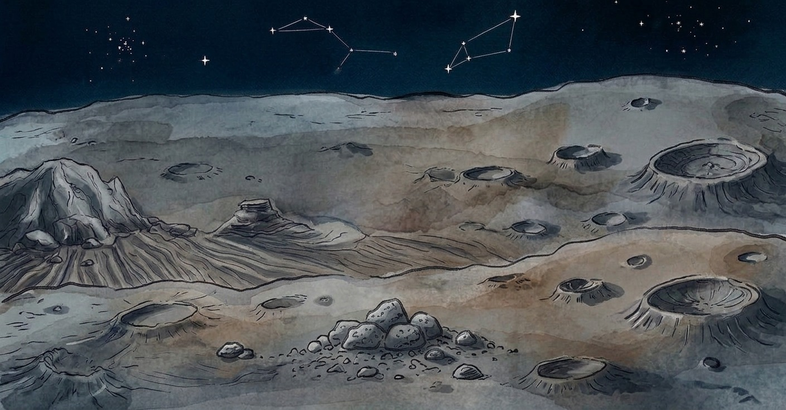

01 / 03
Descubre los objetos, máquinas y rastros que la humanidad ha dejado en otros mundos. Cada objeto cuenta una historia de exploración.
COMENZAR EXPLORACIÓN →UN VISTAZO AL ESPACIO

Selecciona un destino y descubre qué hemos dejado allí.
¿Dónde quedó cada robot? Ordena la línea del tiempo.
Herramientas, módulos y vehículos de las misiones Apolo.
Rovers, módulos y tecnología de exploración.
Satélites fuera de servicio y basura espacial.